CH03.PPT大綱
Consumer Behavior · Life and Marketing
第三章：消費者購買決策
✦ 何謂消費者決策？
✦ 消費者購買決策：過程與型態
✦ 問題察覺
✦ 資訊搜尋
✦ 方案評估
✦ 購買與購後行為
消費者行為的意義與特性
✦消費者行為經歷購買前中後三個階段
購買前
購買中
購買後
消費者重視：
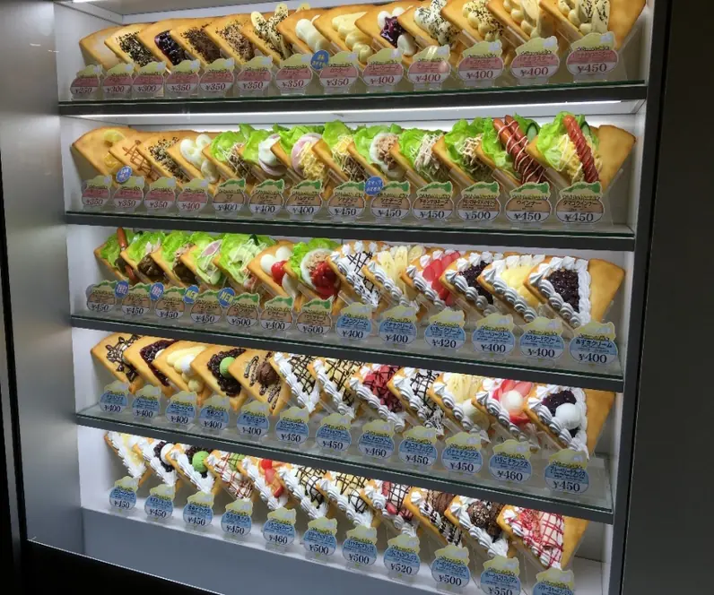
產品(服務)資訊
量與資訊正確性
量與資訊正確性
產品與服務品質
購買體驗、價格
產品(服務)所帶
來的各種利益、
售後處理
來的各種利益、
售後處理
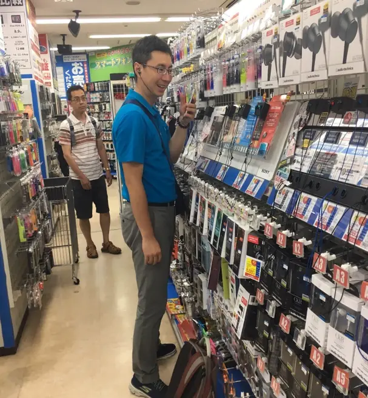
何謂消費者決策？
✦消費者決策是指消費者從察覺消費問題的存在、蒐集
消費資訊、購買方案的評估、實際購買行為，以及購
買後行為的過程。
消費資訊、購買方案的評估、實際購買行為，以及購
買後行為的過程。
✦消費者決策的內涵包括要購買哪種產品品牌、要購買多
少數量、要在何處買，以及何時買等相關的購買決策。
少數量、要在何處買，以及何時買等相關的購買決策。
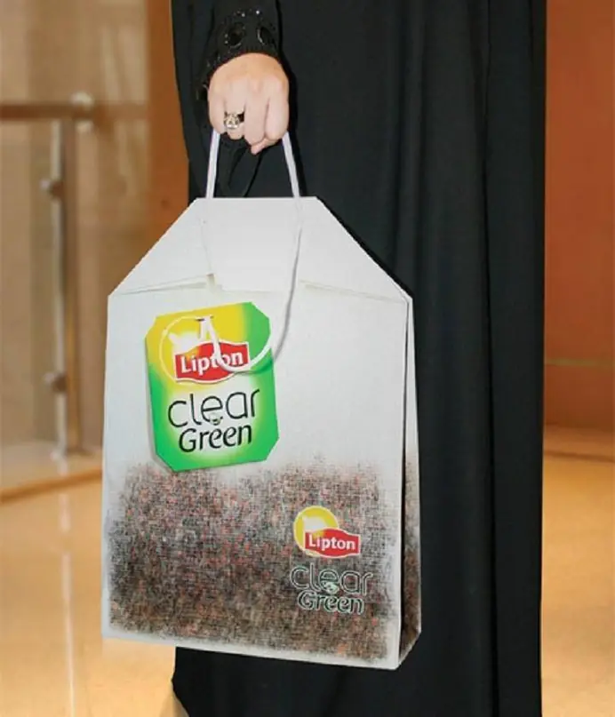
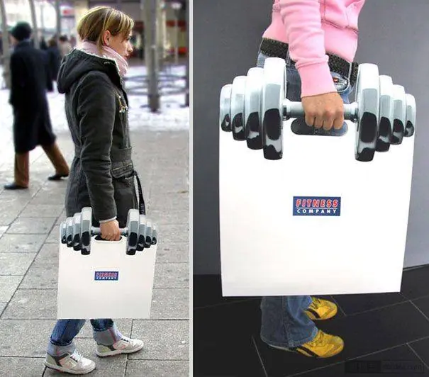
消費者購買決策：過程與型態
✦消費者購買決策過程（基本為五階段）
問題察覺
資訊蒐集
方案評估
購買
購後行為
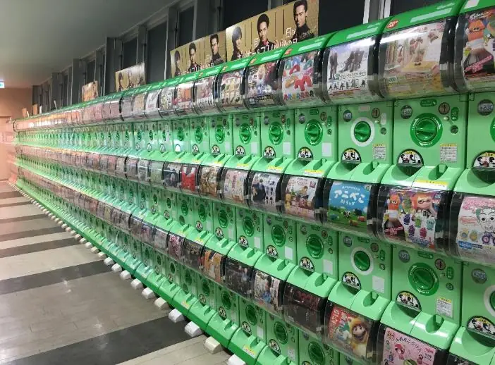
以上過程假設「顧客是理性的」，
即人們會盡可能地仔細蒐集資訊、降低風險
瞭解各方案的優缺點後做出最佳(滿意)的決定。
消費者購買決策：過程與型態
問題察覺
資訊蒐集
方案評估
購買
購後行為
我們每一次購買都會經歷上述過程？﹍
為什麼？﹍﹍﹍﹍﹍﹍﹍﹍﹍﹍﹍﹍﹍﹍﹍﹍﹍
不
因為每一次購買時的「涉入程度」不同
涉入程度：對「購買行動」或「產品」的注重、
在意與感興趣的程度。
在意與感興趣的程度。
購買重要、昂貴、複雜的產品時，涉入程度相當高；會
經歷以上所有過程（例：買汽車、買房子）
經歷以上所有過程（例：買汽車、買房子）
購買較不重要、便宜、簡單的產品，涉入程度較低；會
省略部分過程（例：買早餐、買牙膏）
省略部分過程（例：買早餐、買牙膏）
購買時的「涉入程度」不同
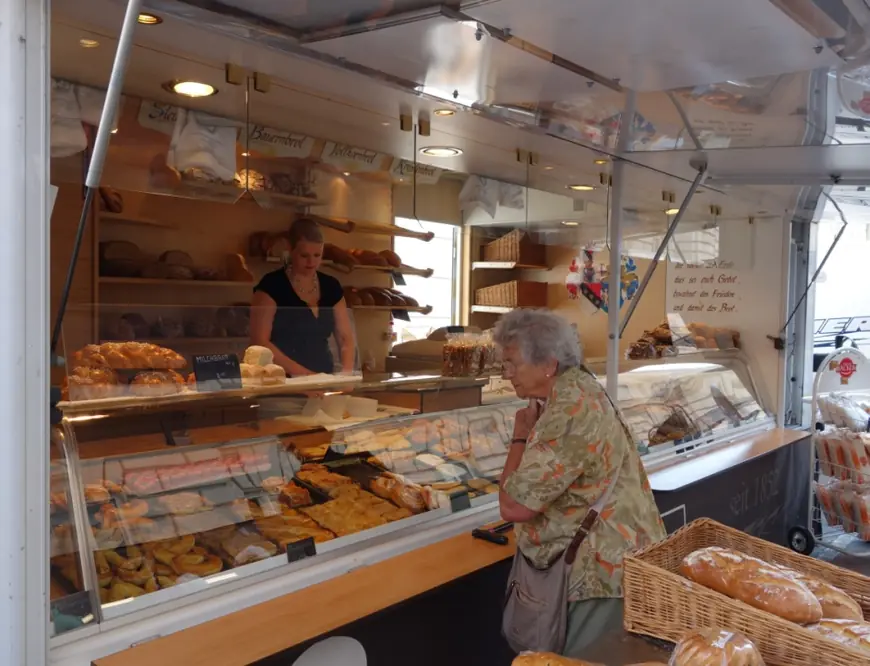
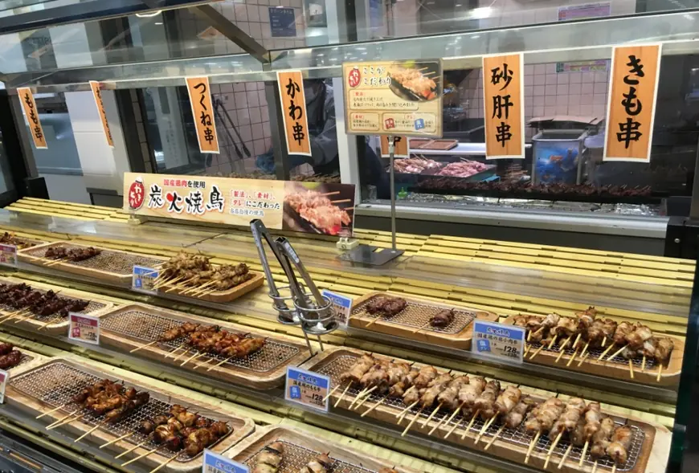
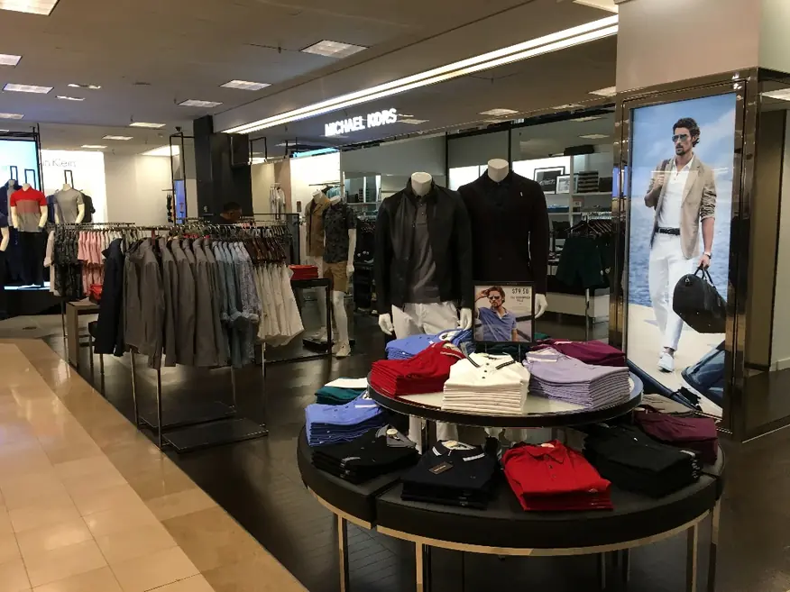
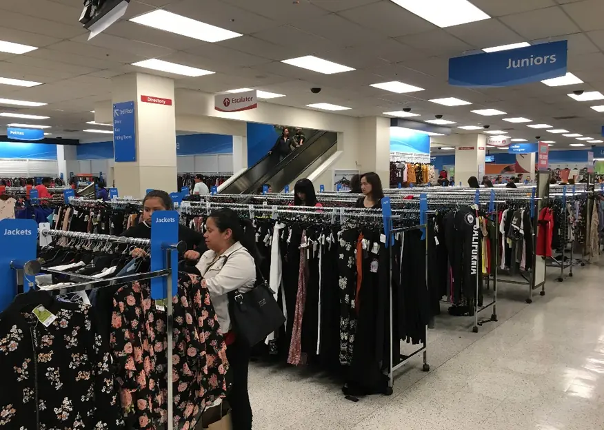
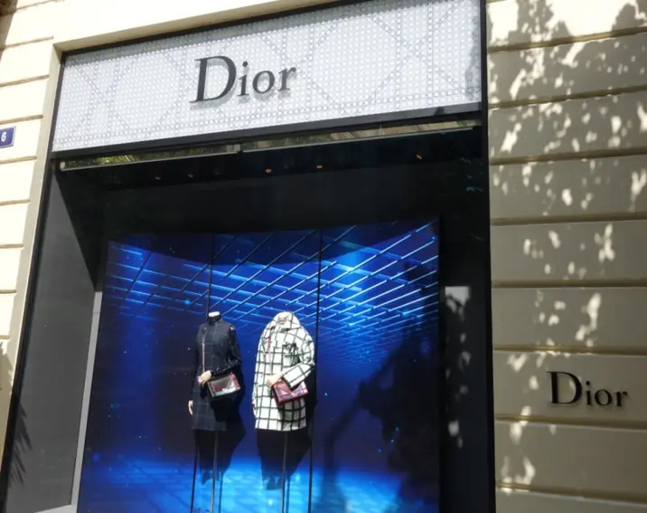
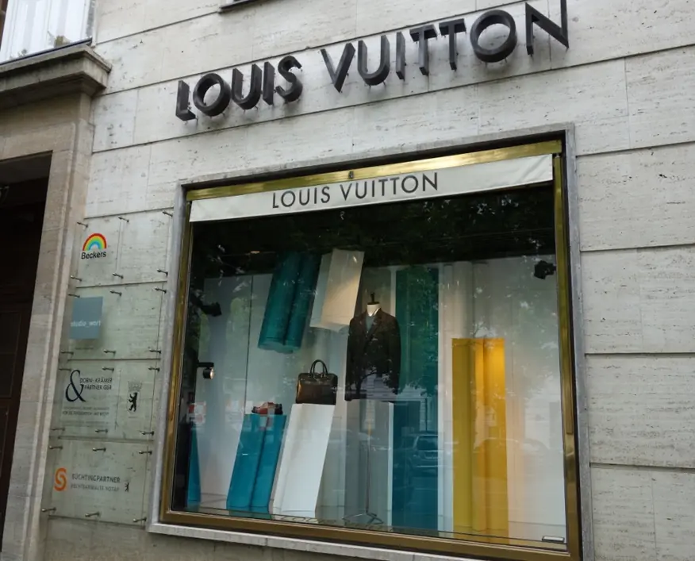
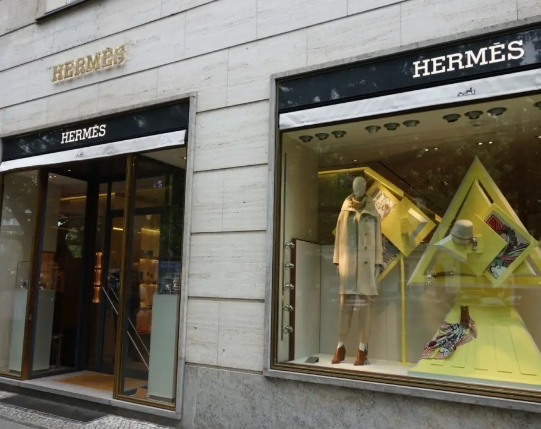
決策型態 | 涉入程度 | 其他特色 |
|---|---|---|
廣泛決策 | 非常高 | |
例行決策 | 非常低 | |
有限決策 | 中等程度 |
依據涉入程度的高低，三種購買決策型態：
通常發生在購買較為昂貴、重要、
瞭解有限的產品時；決策過程比較
冗長複雜，會經歷每個決策階段。
瞭解有限的產品時；決策過程比較
冗長複雜，會經歷每個決策階段。
通常發生在便宜的、熟悉的或不很
重要的產品；決策較簡單省時，可
能在察覺需要後就直接購買。
重要的產品；決策較簡單省時，可
能在察覺需要後就直接購買。
介於上述兩者之間。消費者會花一
些時間來比較新產品與原先產品的
差異所在，最後再做出購買決策。
些時間來比較新產品與原先產品的
差異所在，最後再做出購買決策。
「知覺風險」也影響決策過程，指消費者認為因決策錯
誤而帶來的損失程度(包括金錢、時間、心理感受等)，
知覺風險越大，涉入程度越高
誤而帶來的損失程度(包括金錢、時間、心理感受等)，
知覺風險越大，涉入程度越高
✦知覺風險
購物網站上看到的！
穿在自己身上的…
✦知覺風險
✦知覺風險越高，資訊搜尋量越大，分成五種：
商品功能是否能夠如預期展現
（3C產品）
商品的使用是否會造成健康與身體的危
害 （藥品、食品）
害 （藥品、食品）
外顯性商品的購買與使用是否會造成自
尊、形象與自信心受損（衣服）
尊、形象與自信心受損（衣服）
高單價相對於低單價的商品，一旦決策
錯誤，損失更大 （房子、車子）
錯誤，損失更大 （房子、車子）
商品的購買與使用是否會造成心理負擔，
如罪惡感與後悔等（信用卡借貸）
如罪惡感與後悔等（信用卡借貸）
金錢風險
（monetary risk）
功能風險
（performance risk）
身體風險
（physical risk）
社會風險
（social risk）
心理風險
（psychological risk）
決策特性 | 例行性問題解決 | 有限性問題解決 | 廣泛性問題解決 |
|---|---|---|---|
產品特性 | 低價 | 居中 | 高價 |
產品/品牌熟悉度 | 高 | 中 | 低 |
購買頻率 | 經常 | 居中 | 不常 |
採購涉入程度 | 低 | 中 | 高 |
問題察覺 | 自動 | 半自動 | 複雜 |
資訊搜尋與評估 | 極少 | 有限 | 廣泛 |
採購導向 | 方便 | 介於便利與選購 | 選購 |
購後過程 | 非常有限 | 有限 | 複雜 |
習慣 | 再購惰性 | 滿意/忠誠 | |
品牌忠誠偏低 | 不滿意/品牌轉換 | 不滿意/抱怨 |
三種購買決策型態之特性比較
問題察覺
問題察覺受到兩種刺激的影響。
外在刺激有可能會帶動內在刺激而引起需求，
如餐點香噴噴（外在刺激），聞得令人飢腸轆
轆（內在刺激），因而引起購買念頭。
如餐點香噴噴（外在刺激），聞得令人飢腸轆
轆（內在刺激），因而引起購買念頭。
(動機)
外在刺激
如同學新買手機、商店櫥窗展示、戶外看板圖片
內在刺激
與生心理狀況有關，如飢餓、口渴、身心疲憊
動機
✦內、外部的刺激引發需要的不滿足，進而
再導致驅力（Drive）。驅力會造成緊張的
壓力，進而迫使人們採取行動，而這種驅
力就是所謂的動機（Motivation）。
再導致驅力（Drive）。驅力會造成緊張的
壓力，進而迫使人們採取行動，而這種驅
力就是所謂的動機（Motivation）。
飢餓
動機
香味
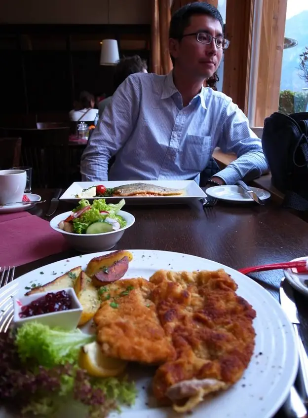
問題察覺
原因都是因為實際狀況比不上理想狀況。
理想狀況
實際狀況
差距越大越可能產生問題察覺
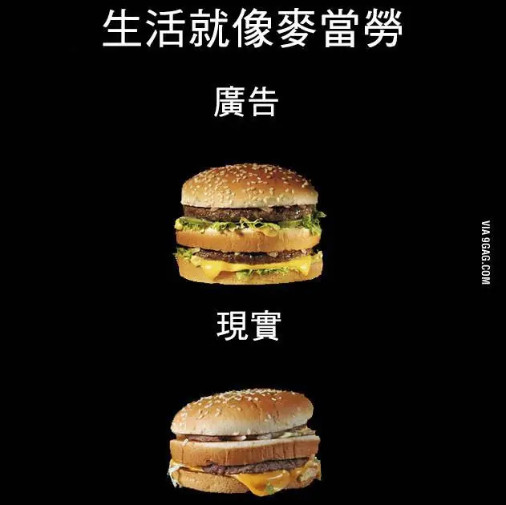
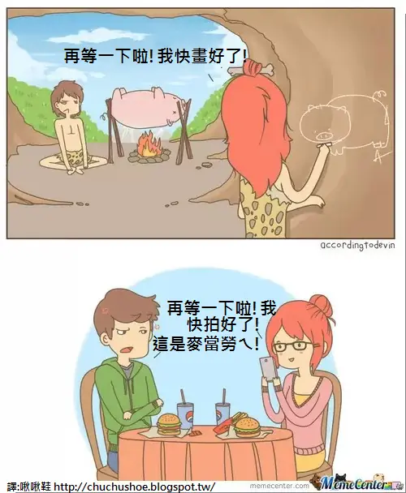
問題察覺
理想狀況
實際狀況
差距越大越可能產生問題察覺
實際狀況下降容易引起問題察覺
例行匱乏：生活用品消耗，需要補充
未被滿足：之前購買的產品表現不佳
理想狀況提昇容易引起問題察覺
如：「我要更帥」、「我想生活更方便」
✦ 所欲與實際狀態的差距性質
理想狀態提高
實際狀態
均衡狀態
無問題
恢復均衡
無問題
（Ａ）機會察覺
理想狀態
均衡狀態
無問題
（Ｂ）需要察覺
恢復均衡
無問題
實際狀態下降
行銷提供的
機會
機會
例行性匱乏
與未滿足的
需要
與未滿足的
需要
✦ 問題察覺的行銷意義
引發消費者購買動機的方式：
引發對實際狀況不滿
創造一個理想的狀況
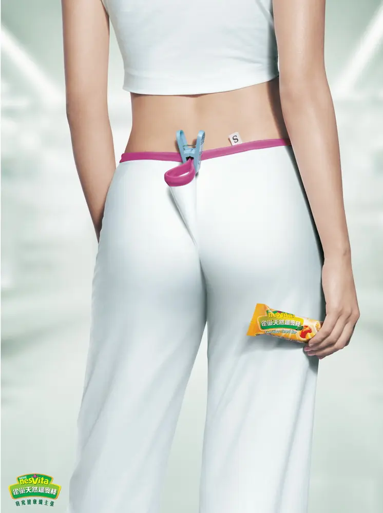
（低卡零食）
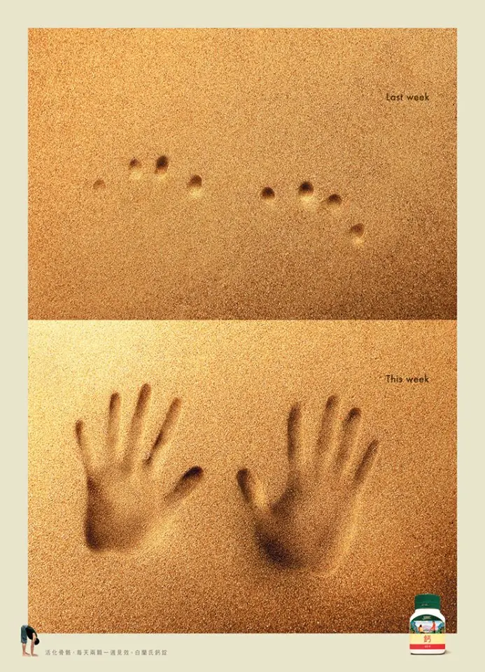
✦ 問題察覺於行銷之應用
影響理想狀態之界定
影響對實際狀態的認知
刺激消費者檢視自己習慣用的品牌
是否真的可以滿足需要
是否真的可以滿足需要
利用廣告或新產品發表
會說明品牌具備的新功
能與利益，告知消費者
可以提升產品位階與等
級
會說明品牌具備的新功
能與利益，告知消費者
可以提升產品位階與等
級
提高產品涉入度
鼓勵消費者比較品牌
增加消費者注意不同品牌的機會
提醒消費者注意自己未達平衡的身
心或生活狀態
心或生活狀態
問題察覺引發的需求
✦一般需求：對於產品或服務類別的需求。
✦選擇需求：對於特定某產品或服務中某一
品牌或服務類型的需要。
品牌或服務類型的需要。
考慮是否需要一台筆記型電腦
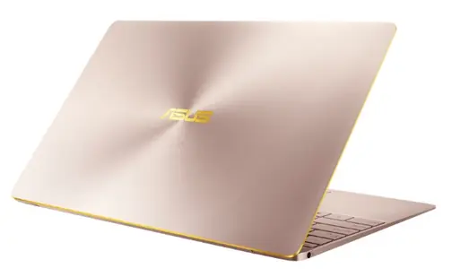
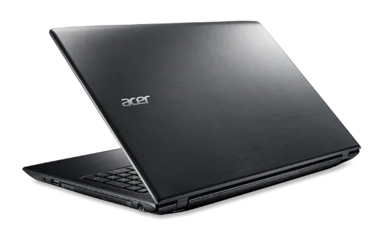
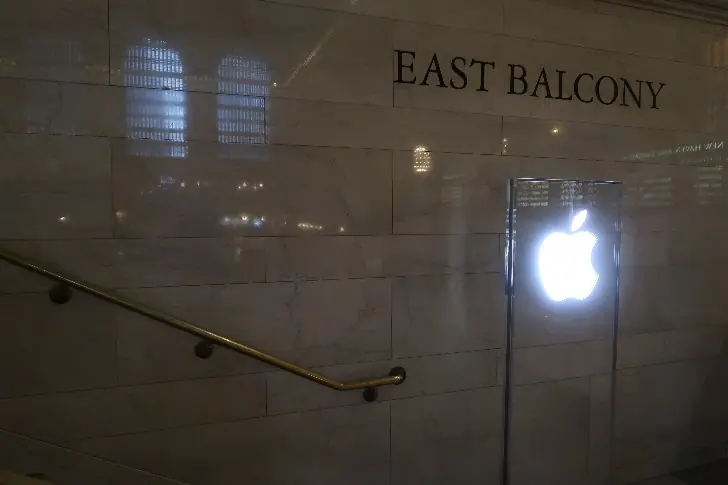
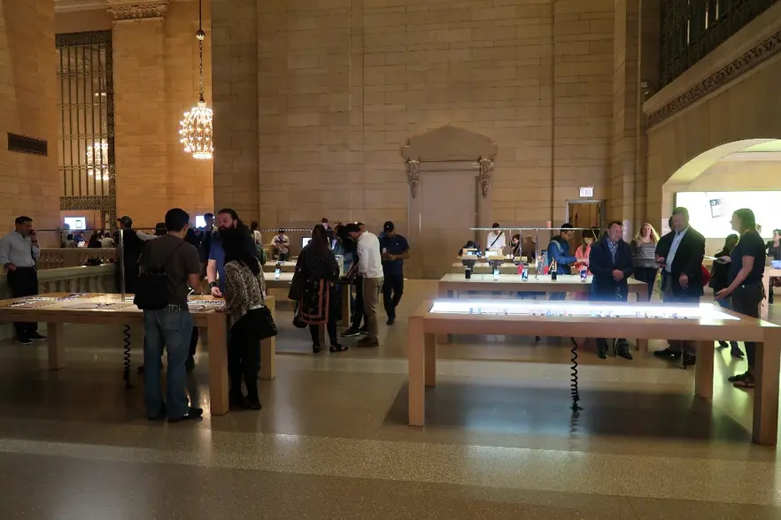
考慮是要買宏碁還是華碩的
筆記型電腦？還是…？
筆記型電腦？還是…？
資訊搜尋
➤在察覺到問題並引發購買動機後，消費者為了
進一步瞭解、選擇產品，就得搜尋資訊。
進一步瞭解、選擇產品，就得搜尋資訊。
➤消費者為進行購買決策的制定，所從事的心智
與形體的資訊搜尋活動，包括搜尋產品、價格
或商店等活動。
與形體的資訊搜尋活動，包括搜尋產品、價格
或商店等活動。
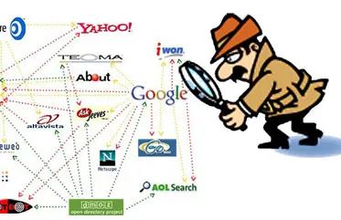
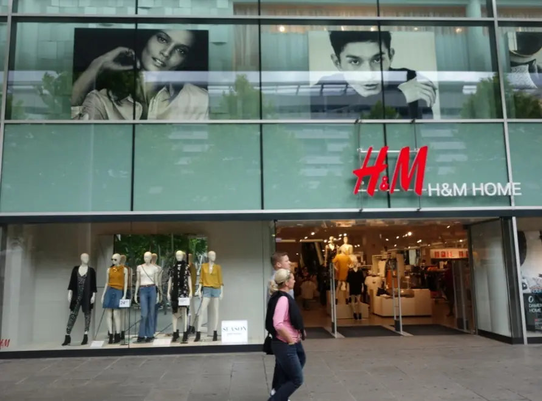
✦ 搜尋之資訊類型
有關產品與
服務來源與
可得性的資
訊
服務來源與
可得性的資
訊
1
有關產品評
估標準的資
訊
估標準的資
訊
2
有關產品特
性與利益的
資訊
性與利益的
資訊
3
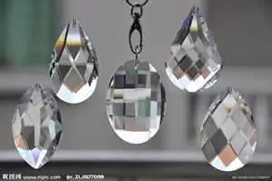
哪裡找的到？
如何判斷？
功能？價格？
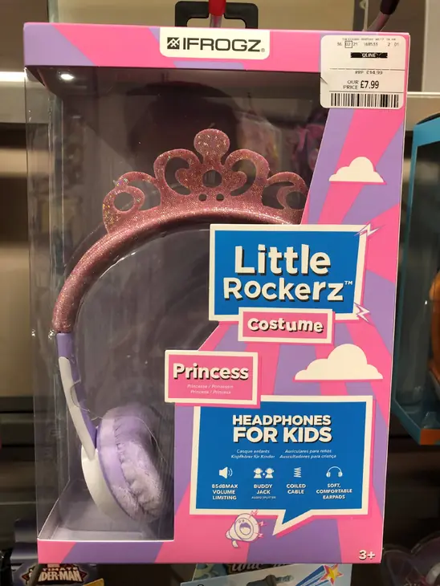
✦資訊搜尋來源
✦內部搜尋：憑記憶(品牌名稱、品牌特色、過去
購買經驗、使用感受、服務的整體觀感與評價)
購買經驗、使用感受、服務的整體觀感與評價)
✦外部搜尋：來自商業、公共、人脈來源
如：廣告、銷售人員
如：消費者團體與
政府單位的報告
政府單位的報告
如：朋友、同事
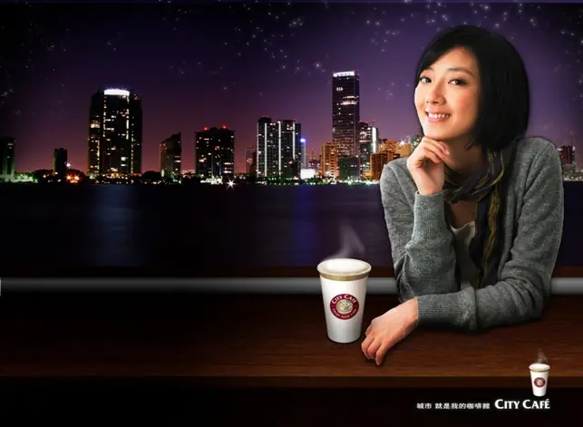
✦資訊搜尋時機
購買前搜尋
在購買前才搜尋相關資訊，以增加產品知識，協助決策
持續搜尋
對某些產品特別感興趣，在平時就不斷地搜尋相關資訊
這種搜尋是針對特定購買情境，因此其心智努力的狀態
稱為情境涉入；也由於搜尋是因購買決策而起，也稱為
購買涉入。
稱為情境涉入；也由於搜尋是因購買決策而起，也稱為
購買涉入。
這種搜尋維持一段時間，而且是因產品而非購買而起，
因此其涉入狀態稱為持久涉入或產品涉入。
因此其涉入狀態稱為持久涉入或產品涉入。
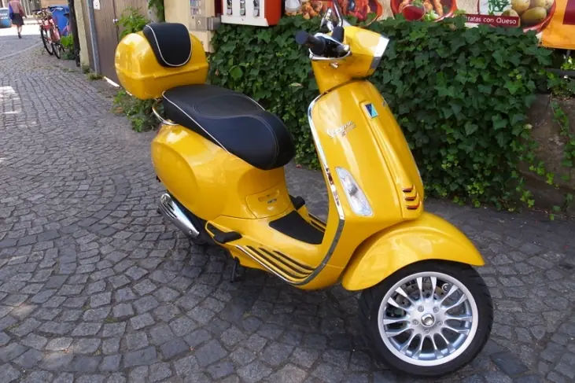
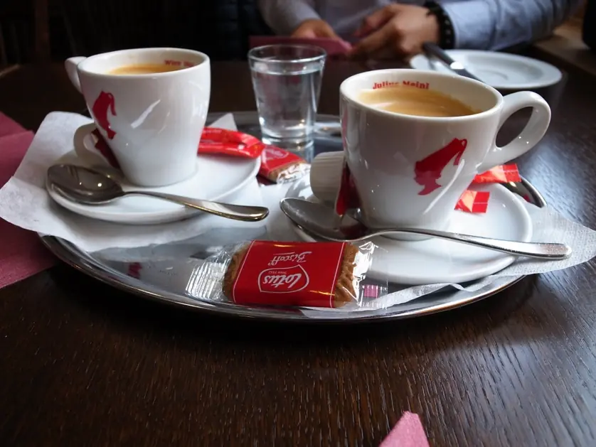
✦資訊搜尋時機
購買前搜尋
持續搜尋
行銷人員應該設法讓他們的搜尋更便利、更有效率。
應特別留意他們對產品的反應，並與他們維繫長期良好
的關係，以藉助其意見領袖(OKL)影響力來掌握市場。
的關係，以藉助其意見領袖(OKL)影響力來掌握市場。
✦影響外部搜尋的因素
影響消費者外部搜尋程度的因素有四大類：
市場、產品性、消費者及情境特性。
這些因素都和外部搜尋的利益及成本有關
醫院附近的商店就是為了滿足緊急性需求
資訊搜尋
✦影響外部搜尋的因素
影響因素種類 | 影響因素 | 資訊搜尋 |
|---|---|---|
市場特性 | A. 可替代方案 B. 價差範圍 C. 商店集中度 D. 資訊可取得性 | + + + + |
產品特性 | A. 價格 B. 差異性 C. 享樂性質 | + + + |
消費者特性 | A. 先前購買經驗 B. 購物導向 C. 收入、年齡、家庭等 D. 產品涉入程度 D. 知覺風險 | - +/- +/- +/- + |
情境特性 | A. 時間多寡 B. 購買給自己(或別人) C. 舒適環境 D. 生心理狀態 | + - + + |
✦ 影響外部搜尋的因素
✦市場特性
可替代方案（產品、品牌、商店）越多，
消費者就越外部搜尋，因為
可從多個方案中挑選一個最好或最適合的。
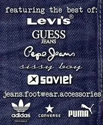
店內如有多個品牌與樣式的牛仔褲，
會增加消費者外部搜尋的機會。
會增加消費者外部搜尋的機會。
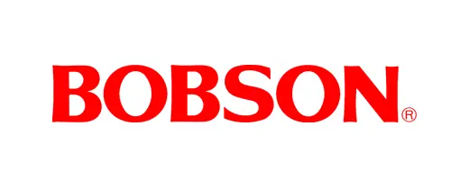
✦影響外部搜尋的因素
✦市場特性
價差越大、商店越集中、資訊越容
易取得，消費者就越會外部搜尋。
易取得，消費者就越會外部搜尋。
百貨公司、超級市場內
商店密集、產品價差大、
資訊方便取得，消費者
因此樂於外部搜尋。
商店密集、產品價差大、
資訊方便取得，消費者
因此樂於外部搜尋。
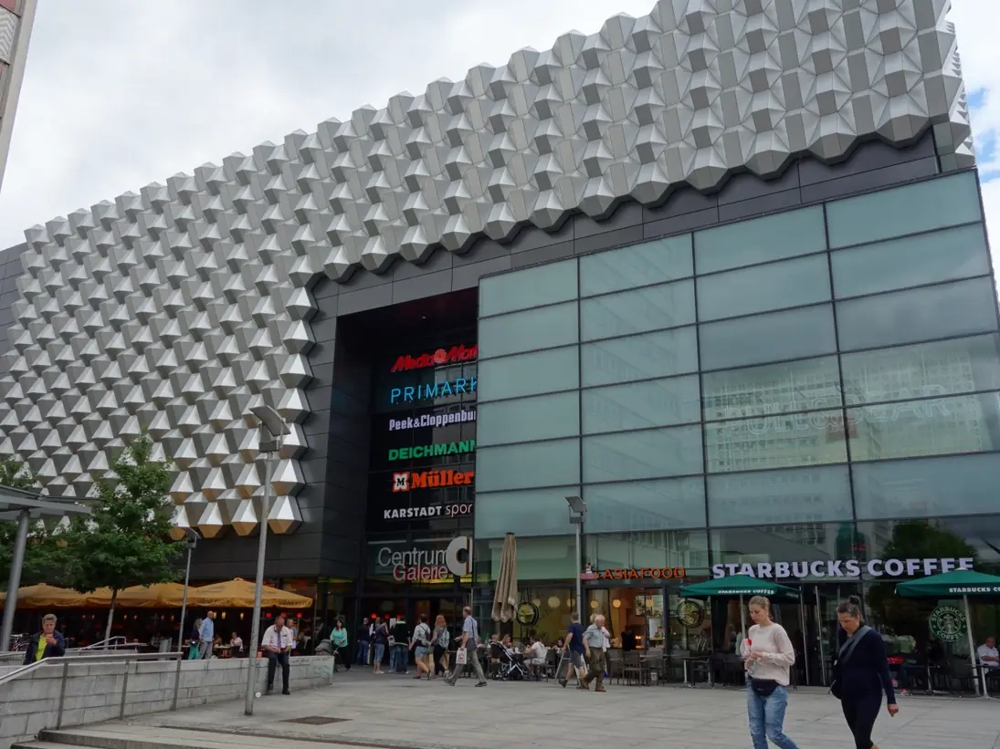
✦影響外部搜尋的因素
✦產品特性
產品的價格越高，或越具備差異性時，
消費者就越想外部搜尋，原因是為了
降低風險或更瞭解產品的獨特性。
隨身碟 v.s. 筆記型電腦，
消費者的外部搜尋程度有何不同？
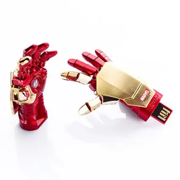
✦影響外部搜尋的因素
✦產品特性
帶來正面經驗或享樂感受的產品，
消費者較會致力於蒐集相關資訊。
無趣的，甚至帶來負面感受的產品，
消費者比較想逃避外部搜尋 。
報告、作業 v.s. 吃喝玩樂，
的外部搜尋程度有何不同？
方案評估
察覺問題並搜尋資訊之後，
消費者可能面對好幾個方案（即選擇）。
消費者如何評估這些方案？
方案評估涉及哪些觀念？
✦ 各種方案之集合
喚起集合
所有方案
知曉集合
未知集合
不當集合
呆滯集合
消費者蒐集資訊的其中一個目的是尋求可以滿足
其需要的替代方案。
其需要的替代方案。
✦方案清單
唐老師決定買台筆記型電腦，內部資訊蒐集後，得到以下品牌：
（知曉集合：消費者已經聽過、知道、甚至使用過的品牌集合）
（知曉集合：消費者已經聽過、知道、甚至使用過的品牌集合）
ACER宏碁
SONY
HP惠普
LG
Lenovo聯想
MSI微星
DELL戴爾
FUJITSU
日製筆電
ASUS華碩
喚起集合
消費者心目中可
能選擇、購買的
品牌集合。
能選擇、購買的
品牌集合。
不當集合
負面經驗、評價、
不列入考慮的品
牌集合。
不列入考慮的品
牌集合。
呆滯集合
沒突出特色、不
喜歡也不討厭的
品牌集合。
喜歡也不討厭的
品牌集合。
Panasonic
筆電
方案評估
✦ 方案清單
能被列入喚起集合的品牌通常只有個位數。
品牌擠入目標市場的喚起集合中，
可佔據消費者腦海版圖，提高產品銷售的機會。
許多行銷活動發揮創意、密集舉辦或播出，
就是為了提高品牌知名度，
讓品牌進入消費者的喚起集合中。
✦產品分類與方案評估
✦消費者會很自然地將環境中的個體或訊息刺激，
依特徵或屬性的不同形成類別，進而評估。
依特徵或屬性的不同形成類別，進而評估。
類別
處理
片段
處理
根據產品知識中的判斷標準來處理產
品訊息。若訊息與其心理類別相符時，
亦即訊息分類成功 ，儲存在類別中的
訊息就會被激起。
品訊息。若訊息與其心理類別相符時，
亦即訊息分類成功 ，儲存在類別中的
訊息就會被激起。
若面對新商品訊息，其刺激訊息不符合消
費者的類別知識，就無法將刺激訊息歸類
至本身的類別知識結構，則視為分類失敗，
此時消費者就會對商品訊息仔細地處理
費者的類別知識，就無法將刺激訊息歸類
至本身的類別知識結構，則視為分類失敗，
此時消費者就會對商品訊息仔細地處理
✦ 方案評估標準
在評估方案時，重要的產品屬性稱為顯要屬性；而
讓某方案脫穎而出的關鍵產品屬性，稱為決定屬性 。
若是唐老師覺得HP惠普、ASUS華碩、MSI微星、
Lenovo聯想筆記型電腦的價格、規格、功能等都相差
不遠，最後以「設計感」選擇了「ASUS華碩」。
Lenovo聯想筆記型電腦的價格、規格、功能等都相差
不遠，最後以「設計感」選擇了「ASUS華碩」。
「設計感」就是決定屬性。
✦ 方案評估標準
✦決定性屬性（Determinative Attributes）
➤產品品類只是讓消費者了解自己有哪些選擇，但在最
後的購買決策中，還需要其他評判標準來決定最後的
購買，這些標準即為產品的相關屬性。
後的購買決策中，還需要其他評判標準來決定最後的
購買，這些標準即為產品的相關屬性。
➤決定性屬性可以幫助消費者在評估時看出每個選擇的
差異所在。
差異所在。
➤即使面對同樣的商品，每一位消費者所認為的決定性
屬性皆不相同，過去累積的知識與經驗讓消費者明白
哪幾個屬性可以比較出產品之間的差異、協助他做出
決策。
屬性皆不相同，過去累積的知識與經驗讓消費者明白
哪幾個屬性可以比較出產品之間的差異、協助他做出
決策。
➤行銷人員在創造新決定性屬性時，也必須注意這個屬
性要能明確區隔自己與競爭廠商的不同。
性要能明確區隔自己與競爭廠商的不同。
✦抄捷徑的決策：捷思法
為了節省時間、簡化決策步驟，我們常依據經驗與簡單
的原則來評估方案；這種抄捷徑的決策，稱為「捷思法」
的原則來評估方案；這種抄捷徑的決策，稱為「捷思法」
常用到三大因素：品牌、產品訊號、市場理念
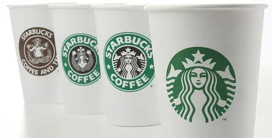
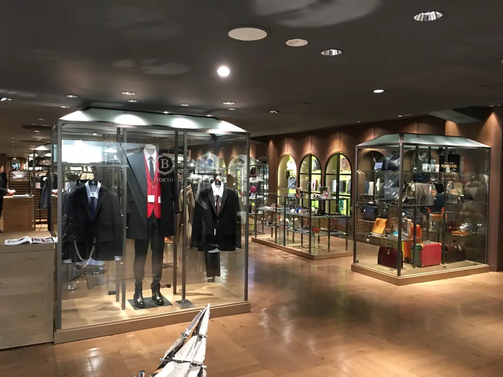
✦抄捷徑的決策：捷思法
街上三家炸雞店，人們通常選擇哪一家？為什麼？
品牌濃縮許多資訊，消費者不必太費心思評估產品；
好的品牌也提供承諾與保證，讓消費者安心。
✦抄捷徑的決策：捷思法
✦ 經常購買相同品牌是基於習慣、不想花腦筋處理資訊，
這種購買稱為慣性購買，此種購買的忠誠度低，消費者
較易轉換品牌。
這種購買稱為慣性購買，此種購買的忠誠度低，消費者
較易轉換品牌。
✦ 有些人卻是因為對品牌抱持正面態度而指定品牌購買，
這種購買是基於品牌忠誠度，消費者不易轉換品牌。
這種購買是基於品牌忠誠度，消費者不易轉換品牌。
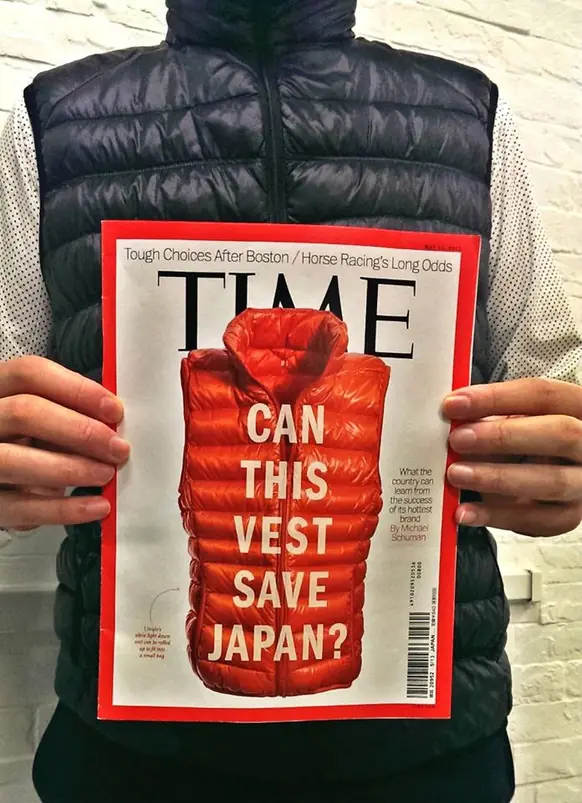
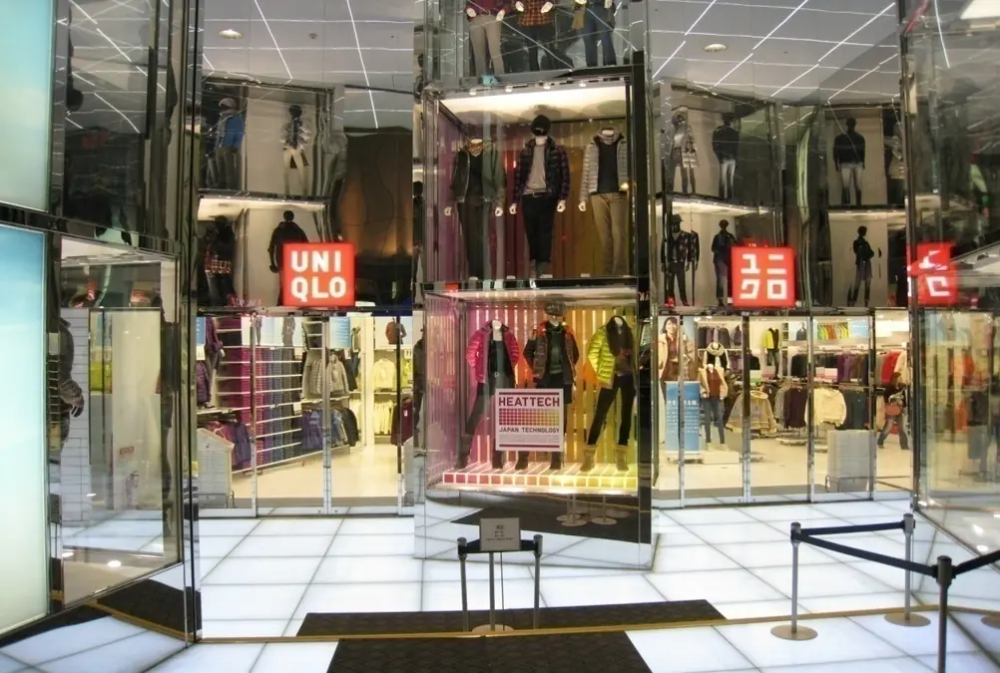
✦抄捷徑的決策：捷思法
這兩家同地區的旅館房間，相同價格。你會選哪一個？
你的選擇其實受到產品訊號（外觀、包裝等）的影響。
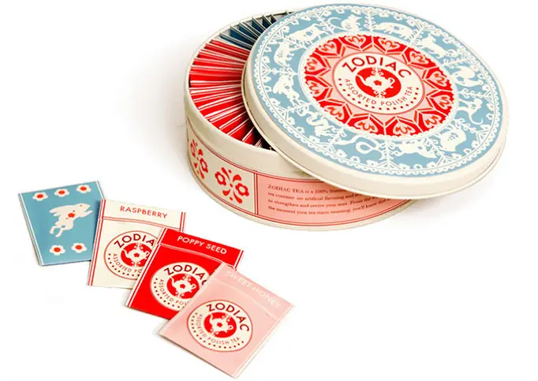
✦抄捷徑的決策：捷思法
哪一款的品質較好？值得多花點錢購買？
來源國或製造國也是產品訊號之一，會影響方案評估
台灣製
中國製
日本製
✦抄捷徑的決策：捷思法
餐廳的客人眾多，食物比較＿＿＿。
新鮮
貴
機場裡的餐飲價格比一般市面＿＿。
消費者常以人云亦云的說法或主觀判斷，對產品、
品牌、商店、市場等發展出一套根深蒂固的想法 ，
即市場理念。
品牌、商店、市場等發展出一套根深蒂固的想法 ，
即市場理念。
行銷構面 | 市場理念例子 |
|---|---|
品牌 | ˙所有品牌都大同小異。 ˙有機食品只是換個標籤、價格賣貴一些，其實都一樣。 ˙最能判斷品牌品質的是品牌成功與否，小品牌無法生存。 ˙市場上最好的品牌是哪些大家最常買的品牌。 ˙買全國性的品牌還是比地方性的品牌及自有品牌比較保險。 ˙在存在已久的產品類別中，悠久歷史的品牌還是比較穩當。 |
商店 | ˙專賣店只是用來熟悉品牌的地方，一旦知道自己要的產品，就可以到低價商店購買。 ˙從商店的櫥窗佈置就可以看出這家店的風格與特性。 ˙專賣店的銷售人員比其他種類商店的店員較具有專門知識。 ˙規模大的店比規模小的商店開價比較實在。 ˙在地商店的服務最好。 ˙商店中的某些品項訂價實惠的話，其他品項也不會貴到哪裡去。 ˙新開幕的店，價格比較吸引人。 |
銷售人員 | ˙日間工作比夜間上班的銷售人員較具有專業知識。 ˙顧客應總是對銷售人員的介紹抱持懷疑的態度。 ˙判斷品牌的好方法是到不同商店，看看銷售人員的說法是否一致。 ˙年紀較長的銷售人員比較了解自己賣的產品。 ˙商店裡的銷售人員越多，這家店越貴。 ˙銷售人員通常會被指引主推店裡利潤最高的產品。 |
廣告與 促銷 | ˙通常低品質的產品才需要使用強硬推銷的方式。 ˙廣告最多的品牌通常也是最好的品牌。 ˙經常打廣告的商店，其訂價應該過高。 ˙免費贈送的商品通常沒好貨。 ˙購買大肆廣告的產品，是幫廠商付廣告費，無法買到品質。 |
購物能力 | ˙會下好的購物決策的人不需要到處搜尋比較。 ˙要購買商品的最好方式就是參考其他人買什麼，準不會錯。 ˙電子商品經常改變，每一次都需要重新看過所有品牌再選擇。 |
方案評估
✦複雜的決策
面對廣泛決策，有些消費者不放心使用捷思法，
而是以理性的態度，仔細權衡不同方案的屬性。
這時的決策可分為非補償性與補償性決策法則兩大類。
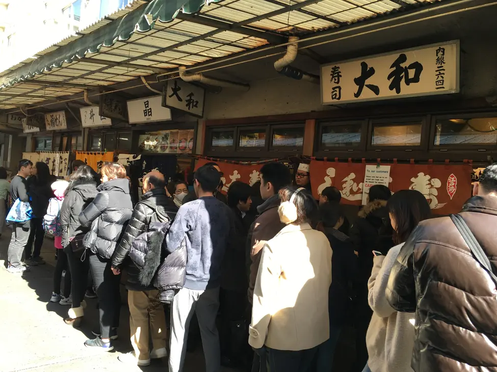
✦複雜的決策：非補償性決策法則
可分為依序比較法則、逐層剔除法則、聯結法則。
在評估產品時，較差的產品屬性造成的劣勢，
無法用較好的屬性來彌補。 (不允許屬性間的相互彌補)
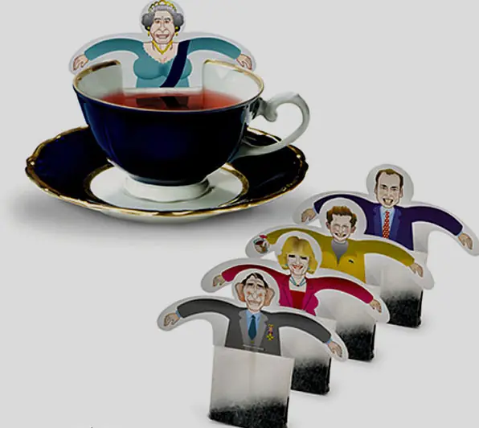
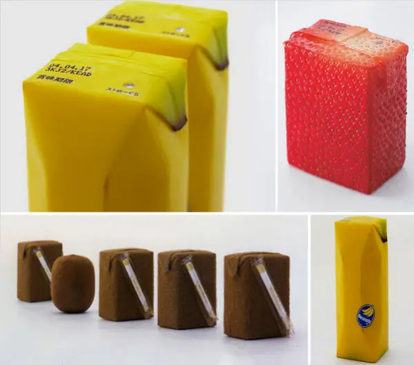
✦非補償性決策法則：依序比較法則，這種法則是先
以最重要的屬性比較各方案，然選出評等最好的。
以最重要的屬性比較各方案，然選出評等最好的。
品牌在各屬性的評分 | |||||
|---|---|---|---|---|---|
評估屬性 | 屬性重要性 | Holiday | Melia | Prince | Rex |
餐廳/休閒設施 | 40％ | 80 | 70 | 90 | 90 |
接近百貨公司 | 30％ | 80 | 80 | 70 | 90 |
新穎程度 | 20％ | 90 | 70 | 90 | 60 |
接近捷運站 | 10％ | 80 | 90 | 70 | 80 |
先以最重要的屬性比較各方案，然後選出評等最好的。
如果第一關有多個方案過關，就以第二重要的屬性比較，以此類推。
例：Prince與Rex以高分通過第一關；第二關Rex以「接近百貨公司」較
佳而獲選。
佳而獲選。
✓
✓
✓
✦非補償性決策法則：逐層剔除法則，先替最重要
的屬性設定門檻，然後剔除門檻以下的方案，若
有多個方案過關，就替次重要的屬性設定門檻，
以此類推直到最後的方案出線。
的屬性設定門檻，然後剔除門檻以下的方案，若
有多個方案過關，就替次重要的屬性設定門檻，
以此類推直到最後的方案出線。
品牌在各屬性的評分 | |||||
|---|---|---|---|---|---|
評估屬性 | 屬性重要性 | Holiday | Melia | Prince | Rex |
餐廳/休閒設施 | 40％ | 80 | 70 | 90 | 90 |
接近百貨公司 | 30％ | 80 | 80 | 70 | 90 |
新穎程度 | 20％ | 90 | 70 | 90 | 60 |
接近捷運站 | 10％ | 80 | 90 | 70 | 80 |
例：假設每個屬性的最低門檻是80分，第一關剔除Melia；第二關剔除
Prince；到了第三關，剔除Rex，Holiday是最後的選擇
Prince；到了第三關，剔除Rex，Holiday是最後的選擇
X
X
X
✓
✦非補償性決策法則：聯結法則，針對各屬性設定
最低門檻，只要任一屬性無法達到門檻，就排除
該方案。如有多個方案通過最低門檻，就採用其
他決策法則進行篩選。
最低門檻，只要任一屬性無法達到門檻，就排除
該方案。如有多個方案通過最低門檻，就採用其
他決策法則進行篩選。
品牌在各屬性的評分 | |||||
|---|---|---|---|---|---|
評估屬性 | 屬性重要性 | Holiday | Melia | Prince | Rex |
餐廳/休閒設施 | 40％ | 80 | 70 | 90 | 90 |
接近百貨公司 | 30％ | 80 | 80 | 70 | 90 |
新穎程度 | 20％ | 90 | 70 | 90 | 60 |
接近捷運站 | 10％ | 80 | 90 | 70 | 80 |
例：假設最低門檻是75分，那麼Holiday就是最終選擇，因為其他旅館有
至少一項屬性沒有達到門檻
至少一項屬性沒有達到門檻
X
X
X
✓
✦複雜的決策：補償性決策法則
可分為簡單加總法則、加權加總法則。
在評估產品時，較差的產品屬性造成的劣勢，可以用較
好的屬性來彌補（屬性之間相互彌補）
好的屬性來彌補（屬性之間相互彌補）
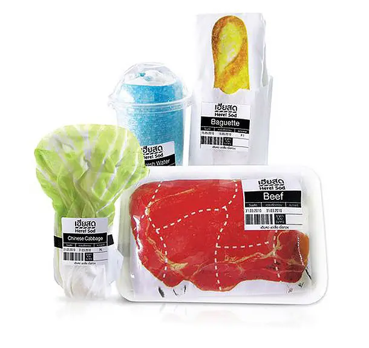
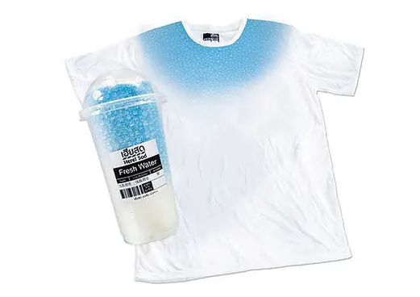
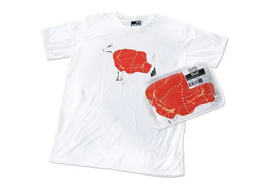
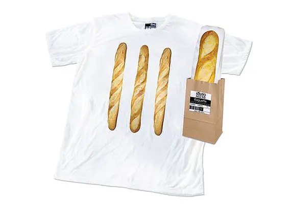
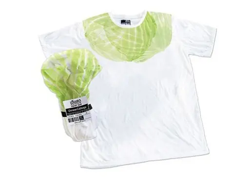
✦補償性決策法則：簡單加總法則
品牌在各屬性的評分 | |||||
|---|---|---|---|---|---|
評估屬性 | 屬性重要性 | Holiday | Melia | Prince | Rex |
餐廳/休閒設施 | 40％ | 80 | 70 | 90 | 90 |
接近百貨公司 | 30％ | 80 | 80 | 70 | 90 |
新穎程度 | 20％ | 90 | 70 | 90 | 60 |
接近捷運站 | 10％ | 80 | 90 | 70 | 80 |
Holiday獲選
＋
330
＋
310
＋
320
＋
320
✦補償性決策法則：加權加總法則
品牌在各屬性的評分 | |||||
|---|---|---|---|---|---|
評估屬性 | 屬性重要性 | Holiday | Melia | Prince | Rex |
餐廳/休閒設施 | 40％ | 80 | 70 | 90 | 90 |
接近百貨公司 | 30％ | 80 | 80 | 70 | 90 |
新穎程度 | 20％ | 90 | 70 | 90 | 60 |
接近捷運站 | 10％ | 80 | 90 | 70 | 80 |
和上個方法不同之處：考慮屬性重要性（百分比）
82
75
82
83
Holiday：82分（80*0.4 + 80*0.3 + 90*0.2 + 80*0.1）
Rex 獲
選
選
購買與購後行為
✦顧客滿意度的形成
在消費者的購後行為中，
顧客滿意度最值得行銷人員重視，
因為它影響消費者日後的購買與推薦行為。
顧客滿意度是指消費者在購買或使用產品後的整
體感覺、評價與態度，進而引發的情緒反應。
體感覺、評價與態度，進而引發的情緒反應。
它的形成可由三大觀點解釋：期望落差模式、歸因理
論、公平理論
論、公平理論
購買與購後行為
✦顧客滿意度的形成：期望落差模式的觀點
期望
表現低於預期，不滿意
表現超過預期，滿意
正向落差
負向落差
期望的有三種：事先預測將得到什麼（預期）、心中
想得到什麼（渴望）、付出的代價而應該得到什麼
（應得的期望）
想得到什麼（渴望）、付出的代價而應該得到什麼
（應得的期望）
滿意度決定於產品(服務)表現與期望的比較結果
✦顧客滿意度的形成：歸因理論的觀點
飛機延誤起飛是誰造成的?該負什麼責任？
飛機延誤起飛是否可避免嗎?
飛機延誤起飛是經常性的嗎?
原因歸屬
可控制性
穩定性
歸因理論探討人們如何為事件結果或行為表現尋求原因，
以及這些原因如何影響情緒、態度和行為。
以及這些原因如何影響情緒、態度和行為。
根據這理論，消費者用三個面向來解釋事件原因：
✦顧客滿意度的形成：歸因理論的觀點
行銷意義
如何向顧客解釋表現欠佳的
原因？
原因？
企業外部不可控制因素
造成的（但要小心別被
認為推卸責任）。
造成的（但要小心別被
認為推卸責任）。
會盡力改善，以後不會
發生。
發生。
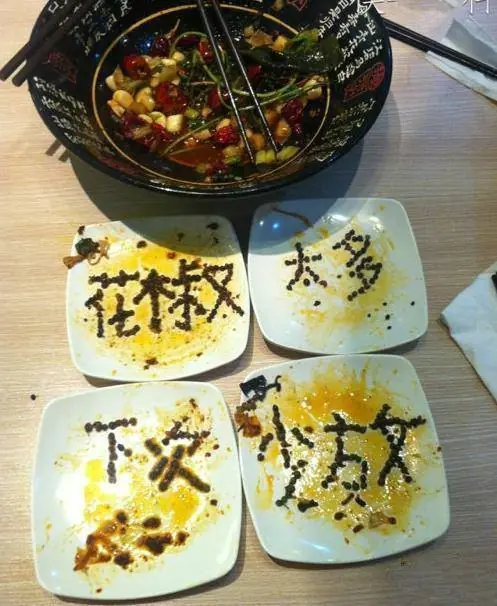
✦顧客滿意度的形成：公平理論的觀點
比較本身與他人的「收穫與投入的比率」，如果本
身的比率小於對方，則感到不滿意；如果相等或大
於對方，就會感到滿意。
身的比率小於對方，則感到不滿意；如果相等或大
於對方，就會感到滿意。
例：「什麼？你在台北買的才7千元？我老遠去香港花
了1萬元，還以為很划算，氣死人！」
了1萬元，還以為很划算，氣死人！」
行銷意義
在消費群體中維持大致相同的收穫與投入比率；
多付費的則可享受升級服務。
✦認知失調
右邊的比較容易引起認知失調，即懷疑自己的選擇是否
正確、其他的抉擇是否更好等因素，而產生心理上的失
衡和壓力。
正確、其他的抉擇是否更好等因素，而產生心理上的失
衡和壓力。
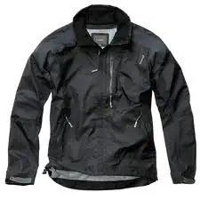
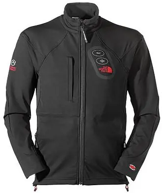
$3,000
$9,200
購買這兩件外套後，一般消費者心理有何不同？
✦認知失調
消費者會尋找資訊或機會來肯定所購買的產品，
或要求更換、退貨等，以減少認知失調。
為了減低消費者的認知失調，業者應：
儘速蒐集資訊瞭解消費者反應（設免費服務電話）
儘速解答消費者疑惑
加強售後服務
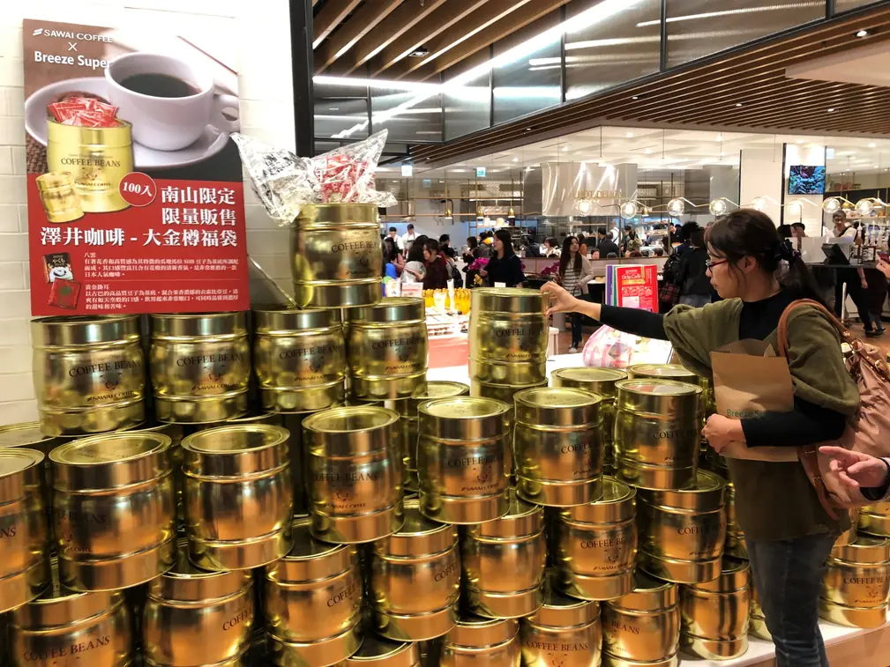
購買與購後行為
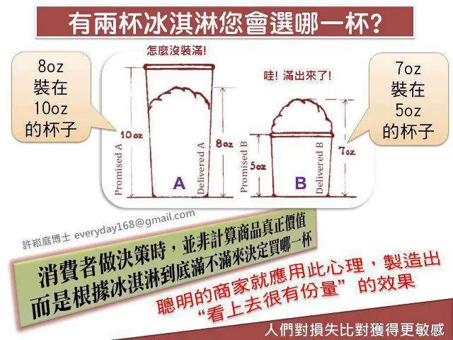
購買與購後行為
✦抱怨
對
產
品
不
滿
產
品
不
滿
沒有抱怨
向業者抱怨
向親友抱怨
（負面口碑）
向第三團體抱怨
採取法律行動
繼續光顧
轉換業者
（變心）
為什麼沒有抱怨？
產品的重要性或缺失的嚴重性不足
抱怨機制或方式不明或繁瑣
對抱怨的作用悲觀
擔心抱怨帶來不愉快的經驗
購買與購後行為
✦產品處置
當產品老舊過時、
已經達到當初購買的目的、
不符合原先期望、
帶來麻煩或是數量太多而變成多餘時，
消費者就會產生產品處置的念頭與行為。
購買與購後行為
✦產品處置
產品
保留
暫時處置
永久棄置
依
原
目
的
使
用
轉
換
成
新
目
的
儲
藏
出
借
借
出
租
租
丟
棄
棄
給
人
人
交
換
換
出
售
售